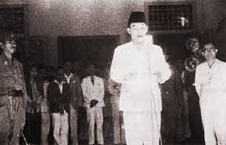
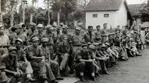
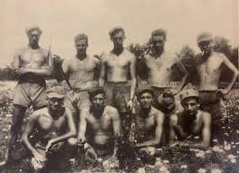
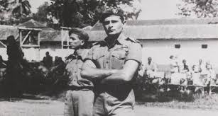
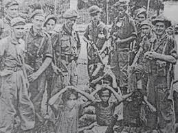
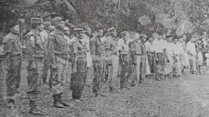
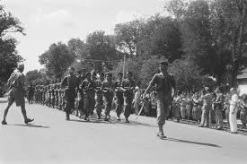
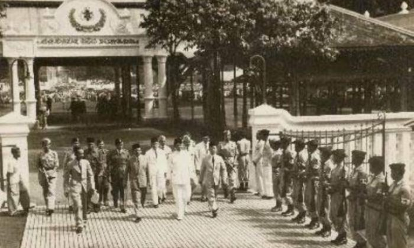
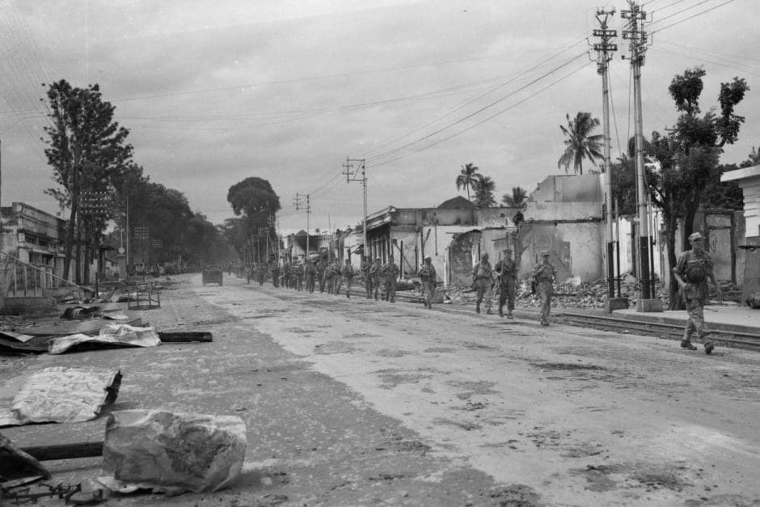

Indonesia’s Independence on August 17, 1945 did not immediately bring an end to the nation’s struggle. The Westerling Tragedy stands as one of the darkest chapters in Indonesian history.

Following the proclamation of independence in 1945, the people of
South Sulawesi expressed their support for the Republic of
Indonesia. In various regions, such as Makassar, Parepare, Bone, and
Barru, they formed republican governments and resisted Dutch
attempts to regain power. However, when Allied and Dutch troops
landed in Makassar in late 1945, the situation began to change.

The Dutch, through the NICA (Netherlands Indies Civil
Administration), attempted to regain control of the region. They
viewed the popular resistance as a threat to "public order." The
popular resistance, which employed guerrilla tactics in rural areas,
made it difficult for the Dutch to control the entire region.
Therefore, they decided to send special forces trained for this type
of warfare, the Depot Speciale Troepen (DST).

In December 1946, Captain Raymond Westerling and his DST troops
arrived in Makassar. They arrived with a mission to crush a group
considered rebels and restore "security" to the South Sulawesi
region. However, Westerling's methods were utterly inhumane.

Westerling implemented a strategy he called the "Westerling method,"
an extreme military action involving gathering villagers in a
village, separating those suspected of involvement, and subjecting
them to violent interrogations. Anyone deemed guilty was shot on the
spot without trial. This brutal campaign began in several villages
around Tremboe (now Pinrang Regency) and then spread to other areas
such as Suppa, Parepare, Bulukumba, Enrekang, and Bone

Westerling's first operation was in Tremboe on December 11, 1946.
There, the villagers were gathered in the village square early in
the morning. The DST troops ordered all adult males to line up and
surrender their weapons. Afterward, they were interrogated one by
one. Anyone accused of being a member or supporter of the Republic
was immediately and publicly executed. Many were shot without any
evidence, based solely on suspicion or one-sided reports. Following
the operation in Tremboe,

Westerling continued his operations in other villages. In each
village, the same pattern was followed: Dutch troops searched
residents' homes, burned down houses suspected of harboring
fighters, and executed anyone accused of involvement in the
resistance movement. The bodies of the victims were left lying
without proper burials, as a form of terror to deter other villagers
from resisting. According to eyewitness accounts, Westerling himself
often led the executions. He stood before the line of villagers with
a pistol in his hand and shot the victims one by one in the head.
These sadistic acts were even witnessed by children and women. In
some cases, Westerling ordered local soldiers collaborating with the
Dutch to also shoot, to deter them from disobeying his orders.

In January 1947, Operation DST expanded. The Barru, Enrekang, and
Bone regions became the next targets. In the Parepare area, hundreds
of residents were killed simply for their alleged links to the
Republican guerrilla forces. Villages suspected of harboring
fighters were razed to the ground. Westerling also formed a local
spy group tasked with reporting on anyone deemed "anti-Dutch."
However, these reports were often used for personal revenge,
resulting in many innocent people being executed. Within a short
time, thousands of people had become victims. Survivors described
the operation as being carried out with strict military discipline
and proceeding with incredible speed. In a single night, entire
villages could be depopulated. This violence continued for several
weeks without interruption

The Indonesian government, based in Yogyakarta at the time, could do
little because South Sulawesi was under Dutch occupation. However,
reports of Westerling's atrocities reached Republican leaders
through letters and testimonies from refugees. The Republican
government then strongly condemned these actions and presented them
as evidence of Dutch war crimes in international forums. Despite
this, the Dutch continued to try to cover up the incident. They
claimed that Westerling was only carrying out "security" measures
against rebels, not a massacre of civilians.

After approximately three months of military operations, Westerling
reported to his superiors that the situation in South Sulawesi was
"secure." The operation ended in February 1947, but what remained
was destruction, grief, and suffering for the people. Thousands of
families lost their lives, many villages were completely destroyed,
and deep trauma gripped the local community for years.
After the operation, Westerling was never tried for his brutal
actions. He was even returned to the Netherlands and lived a normal
life without punishment. This is clear evidence that the Dutch
colonial government turned a blind eye to these egregious human
rights violations. Despite this, the Indonesian people have never
forgotten this event. The tragedy of the Westerling Massacre
symbolizes the suffering and determination of the Indonesian people
in defending their independence from colonial rule.